Ders 15
Bu önemli bir ders, ana konumuz yansıtma / izdüşüm (projection). Mesela $b$ vektörünü alıp $a$ üzerine olan "yansımasını" hesaplamak. Bu yansımayı sanki $a$'ya dik bir şekilde bir lamba açtık ve oradan gelen ışık sonucunda $b$'nin $a$ üzerine düşen "gölgesini" hesaplıyoruz gibi düşünebiliriz.
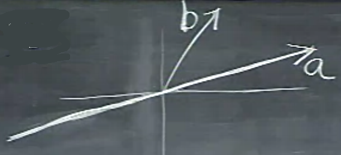
Yansıtmayı yapmak için $b$'nin $a$'ya en yakın olduğu noktayı bulmalıyım.
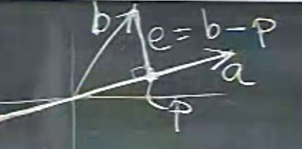
Bu noktaya $p$ diyebilirim, $b,a$ arasındaki en kısa mesafeye de bir nevi "hata (error)" olarak bakabilirim, bu mesafeye $e$ harfini vereceğim. Hata sözünü kullandık, çünkü, sanki $b$, $a$'dan "sapmış" ve biz bu sapmanın ölçüsünü buluyoruz gibi bakılabilir bu probleme.
Peki niye $e = b-p$? Şu resme bakalım,
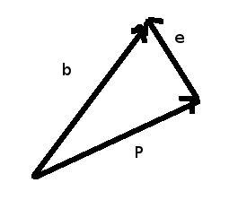
Basit vektör aritmetiğinden biliyoruz ki, birbirine zincirleme duran vektörlerde, zincirin başından sonuna direk gidilmek için zincirdeki tüm vektörler birbiriyle toplanır. Üstteki resimde $b = p + e$. Ufak bir cebirsel işlemle $e = b - p$ buluruz.
Peki $p$'yi nasıl bulacağız? Amacımız bu, yansımayı bulmak. Muhakkak elimizde bir dik üçgen var, eğer trigonometri yapıyor olsaydık, $\cos, \sin$, vs kullanıp birşeyler bulabilirdik. Lıneer Cebir'in metotları çok daha temiz.
Bildiklerimiz neler? Biliyoruz ki $p$, $a$'nin bir katı, çünkü aynı çizgi üzerindeler.
$$ p = xa $$
diyelim. O zaman bulmak istediğim bu $x$ sayısı.
Bildiğimiz bir diğer şey, $e$ ve $a$'nin birbirine dik olduğu. İki vektörün dik olmasının tercümesi nedir? İki vektörün noktasal çarpımının sıfır olması. O zaman
$$ a^T e = 0 $$
$$ a^T(b - p) = 0 $$
$$ a^T(b - xa) = 0 $$
Tekrar düzenlersem
$$ xa^Ta = a^Tb $$
Sol taraftaki $a^Ta$ bir tek sayı artık (çünkü bir noktasal çarpım), onu alıp sağ tarafa bölüm olarak taşıyabilirim,
$$ x = \frac{ a^Tb}{a^Ta} $$
İşte ihtiyacımız olan katsayı bu. Bunun içinde cosine bir şekilde var tabii, ama trigonometriye hiç girmemize gerek yok, pür vektörler ile bu işi hallettik. Sonra bu $x$'i alıp $p = ax$ ile $p$'yi hesaplıyoruz. Hepsini biraraya koyarsak,
$$ p = a\frac{ a^Tb}{a^Ta} $$
Biraz zihin egzersizi yapalım: eğer $b$'yi iki katına çıkarırsam, $p$ ne olur? İki katına çıkar. Peki $a$'yi iki katına çıkarırsam? Üstteki resmi düşünürsek, hiç değişmemeli. Cebirsel olarak ta bunu görebiliriz, üstteki ve alttaki $a$'lardaki artış birbirini iptal edecektir.
Şimdi, olaya matrissel olarak bakmak gerekirse, bir yansıtma matrisi $P$ olsun istiyorum, öyle ki
$$ p = P b $$
olsun, yani bu matris $b$'ye uygulanınca $p$'yi bulayım. O zaman iki üstteki $p$ formülü içinden $b$ haricindeki kısımları çekip çıkartmam lazım.
$$ P = \frac{ aa^T}{a^Ta} $$
Bu bir matris. Bölünen bir matris, bölen bir skalar. Bazı örnekleri hesaplayalım, ve grafikleyelim,
o = np.array([5,5,5])
b = np.array([[3.,3.,3.]]).T
a = np.array([[0,5.,5.]]).T
P = a.dot(a.T) / a.T.dot(a)
p = P.dot(b)
print P
print p
[[ 0. 0. 0. ]
[ 0. 0.5 0.5]
[ 0. 0.5 0.5]]
[[ 0.]
[ 3.]
[ 3.]]
import sys; sys.path.append('../../vision/vision_02')
from mpl_toolkits.mplot3d import Axes3D
import plot3d
fig = plt.figure(); ax = Axes3D(fig)
plot3d.plot_vector(fig, o, b)
ax.hold(True)
plot3d.plot_vector(fig, o, a, 'cyan')
ax.hold(True)
plot3d.plot_vector(fig, o, p, 'yellow')
ax.hold(True)
plt.savefig('linear_15_01.png')
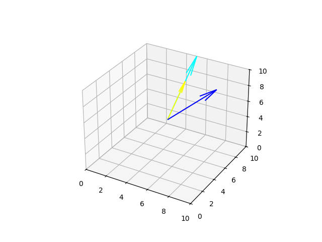
$P$ ilginç bir matristir. Özellikleri nedir?
Kolon uzayı neydi? Bir vektörü o matris ile çarptığımızda sonuç her zaman matrisin kolon uzayındadır. $P$'nin kolon uzayı $a$'dan geçen çizgidir, seviyesi (rank) 1'dir, simetriktir (bir vektörü devriği ile sağdan çarpınca sonuç matrisi simetrik olur), yani $P^T = P$.
Eger yansıtma matrisini iki kere uygularsam ne olur? Ikinci yansıtmanin hicbir etkisi olmamasi gerekir, yani $P = P^2$.
Eğer daha yüksek boyutlara geçersek? O zaman üstüne yansıtma yaptığımız bir çizgi olmayacak, üç boyutta bir düzlem, daha yüksek boyutlarda N boyutlu bir altuzay olacak.
Yansıtma neye yarar? Önemli faydalarından biri $Ax = b$ denklemini çözerken ise yarar. Bazen bu denklemin çözümü yoktur. Belki bilinmeyenlerin sayısından daha fazla denklem verilmiştir. O zaman tam denklemi çözmeye uğraşmak yerine, çözülebilecek en yakın şeyi çözmeye uğraşmak gerekir, yani
$$ A\hat{x} = p $$
ki $p$, $b$'nin $A$'nin kolon uzayına yansıtılmış hali olacak. Bir "çözüm" olmak kolon uzayının bir kombinasyonu olmak demek ise, bu kolon uzayına yansıtılan $b$ üzerinden çözümü elde edebilmeyi umabiliriz. 3 boyutta
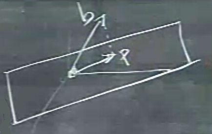
Üzerine yansıtma yapılacak düzlem nedir? Düzlemi belirlemek için onu tanımlayacak bir baz bulabilirim, iki vektör yani, mesela $a_1,a_2$ diyelim.
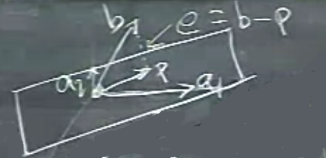
Bu iki vektörün birbirine dik olması şart değil, bağımsız olması gerekli ama. $a_1,a_2$'nin yarattığı düzlem $A$'nin kolon uzayı ile aynıdır, yani
$$ A = \left[\begin{array}{rr} \uparrow & \uparrow \\ a_1 & a_2 \\ \downarrow & \downarrow \end{array}\right] $$
$e$ düzleme diktir. Peki $p$ nedir? $a$ vektörlerinin bir kombinasyonudur, yani
$$ p = \hat{x}_1a_1 + \hat{x}_2a_2 $$
ya da daha temiz olarak
$$ p = A\hat{x} $$
Aradığımız $\hat{x}$. Anahtar şurada, $e$ yani
$$ b - A\hat{x}$$
düzleme dik. Ve düzleme dik ise, düzlemdeki her vektöre dik. O zaman
$$ a_1^T( b - A\hat{x}) = 0$$
$$ a_2^T( b - A\hat{x}) = 0$$
Fakat üstteki gibi iki ayrı formül yazmak yerine, matris formu kullanamaz mıyım?
$$ \left[\begin{array}{rrr} & a_1^T & \\ & a_2^T & \end{array}\right] (b - A\hat{x}) = \left[\begin{array}{rrr} 0 \\ 0 \end{array}\right] $$
Ya da
$$ A^T(b - A\hat{x}) = 0 $$
Bu problemin çizgizel versiyonunde $A$ yerine $a$ kullanmıştık, ve $a$ tek bir vektördü. Zaten $A$ yerine $a$ kullanırsak, aynı formülü elde ediyoruz.
Bir soru soralım şimdi: $e$, yani $b - A\hat{x}$ hangi uzayın içindedir? Cevap, $A^T$'nin sıfır uzayındadır (nullspace), yani $N(A^T)$ içinde. Sıfır uzayı hakkında neler biliyoruz? Sıfır uzayı ve kolon uzayları birbirine dikgendir (orthogonal). O zaman $e$ $N(A^T)$ içinde ise, $e \perp C(A)$ demektir, yani $e$ de kolon uzayına dikgendir. Devam edelim, üstteki formülü düzenlersek,
$$ A^TA\hat{x} = A^Tb $$
Dikkat edersek, önceki versiyonda $a^Ta$ bir tek sayıydı, böylece onu bölen olarak sağa geçirmiştik. Şimdi ne yapacağız?
$$ \hat{x} = (A^TA)^{-1}A^Tb $$
Daha önce
$$ p = A\hat{x} $$
demiştik, o zaman
$$ p = A(A^TA)^{-1}A^Tb $$
Demek ki yansıtma matrisi eşitliğin sağında $b$ harici olan tüm semboller,
$$ P = A(A^TA)^{-1}A^T $$
Şimdi dikkat, bilerek bir hata yapacağım, üstteki formülün sağ tarafını cebirsel olarak manipüle edeceğim
$$ AA^{-1}(A^T)^{-1}A^T = I$$
Bu yanlış duruyor, $P$ birim matris olamaz. Nerede hata yaptık? Manipülasyon mekanik, teknik olarak doğru. Hata $A$'nin kare matrisi olmamasında. O sebeple $A^TA$'yi üstte yaptığım gibi parçalayamam çünkü bir matrisin tersini alabilmek için onun en azından kare olması gerekir (bu yeterli şart değil tabii ki).
Yansıma matrislerinin simetrik olmasını bekliyordum, ve bakıyorum ki öyle.
$$ P^T = P $$
ve
$$ P^2 = P $$
Kontrol edelim
$$= A(A^TA)^{-1}A^T \ A(A^TA)^{-1}A^T $$
$$= A(A^TA)^{-1}\cancel{A^T \ A(A^TA)^{-1}}A^T $$
$$= A(A^TA)^{-1}A^T $$
Üstteki son ifade $P$'ye eşit.
Uygulama: En Az Kareler (Least Squares)
Ne zaman formülden daha fazla veri vardır? Mesela veriye çizgi "uydurmak (fitting)" istediğimde durum budur. Diyelim ki $t,D$ eksenleri üzerinde
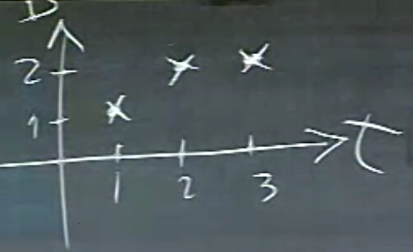
Veri şöyle olsun, $(1,1),(2,2),(3,2)$, üç tane nokta. Bu noktalara en yakın şekilde geçecek çizgi kabaca şöyle olur [çizgi pek düz olmadı ama neyse].
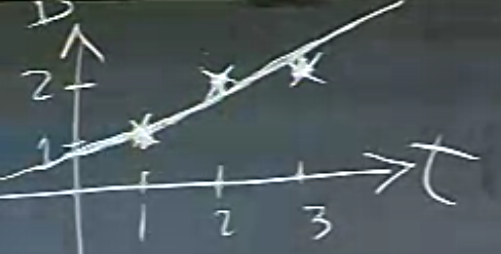
Bu problem ödevde $b = C+Dt$ olarak gösterildi. O zaman
$$ C + D = 1 $$
$$ C + 2D = 2 $$
$$ C + 3D = 2 $$
Bu tür problemleri çözerken anahtar yaklaşım bu, formülü yazalım, ve çözmek istediğimiz (ama çözemediğimiz) denklemler serisini ortaya çıkaralım. Matris olarak yazarsak,
$$
\underbrace{
\left[\begin{array}{rr}
1 & 1 \\
1 & 2 \\
1 & 3
\end{array}\right]
}{A}
\underbrace{
\left[\begin{array}{r}
C \\
D
\end{array}\right]
}{x}
=
\underbrace{
\left[\begin{array}{r}
1 \\
2 \\
2
\end{array}\right]
}_{b}
$$
Gördüğümüz gibi 3 tane denklem ve 2 tane bilinmeyen var. Yani verilen (denklemler) bilinmeyenlerden daha fazla. Bu sebeple bazı denklemler (ya da hiçbiri) doğal olarak tam olarak uymayacak. Amaç $Ax = b$'yi çözmek değil, yansımayı çözmek. O zaman $A$'yi alttaki yerine koyunca, çözüm ortaya çıkacaktır.
$$ \hat{x} = (A^TA)^{-1}A^Tb $$
Matris tersi kullanmadan vektörün düzlem üzerine yansıtmasını daha direk bir şekilde şöyle anlatabilirdik [1]: hatırlarsak, bir $u$ vektörünün diğer bir $v$ vektörünün üzerine yansıtması (operasyonu $\mathrm{proj}$ ile belirtelim)
$$ \mathrm{proj}_v(u) = \frac{u \cdot v}{||v||^2} $$
idi. O zaman $u$'nun bir düzlem üzerine yansıtmasını $u$'nin içinde o düzleme dik olan bileşenlerini çıkartarak bulabiliriz. Düzlemi yatay olarak düşünürsek $u$ içinden düzleme dikey olan bileşenleri çıkartınca geriye $u$'nun yatay bileşenleri kalır, bu da $u$'nun düzleme yansıtılmış hali demektir. Peki düzleme dikey olan vektörü nasıl buluyoruz? Bu vektör zaten biliniyor, bu vektör düzlemin normal vektöründen başka bir şey değil. Normal vektor $n$ icin formul,
$$ \mathrm{proj}{\textrm{düzlem}}(u) = u - \mathrm{proj}{n}(u) = u - \frac{u \cdot n}{||n||^2} n $$
Bir örnek üzerinde görelim,
import sys; sys.path.append('../../vision/vision_02')
from mpl_toolkits.mplot3d import Axes3D
import plot3d
o = np.array([5,5,5])
u = np.array([3,3,3])
n = np.array([-1/3.,2/3.,2/3.])
fig = plt.figure()
ax = Axes3D(fig)
plot3d.plot_plane(ax, o, n, size=5)
plot3d.plot_vector(fig, o, u)
plot3d.plot_vector(fig, o, 3*np.array(n), 'red')
plt.savefig('15_8.png')
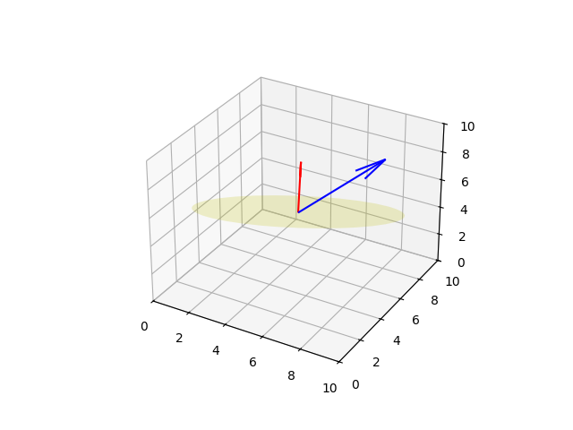
Mavi vektörü düzleme yansıtmak istiyoruz.
p = u - (np.dot(u,n) / np.dot(n,n)) * n
print p
[ 4. 1. 1.]
fig = plt.figure()
ax = Axes3D(fig)
plot3d.plot_plane(ax, o, n, size=5)
plot3d.plot_vector(fig, o, u)
plot3d.plot_vector(fig, o, p, 'cyan')
plot3d.plot_vector(fig, o, 3*np.array(n), 'red')
plt.savefig('15_9.png')
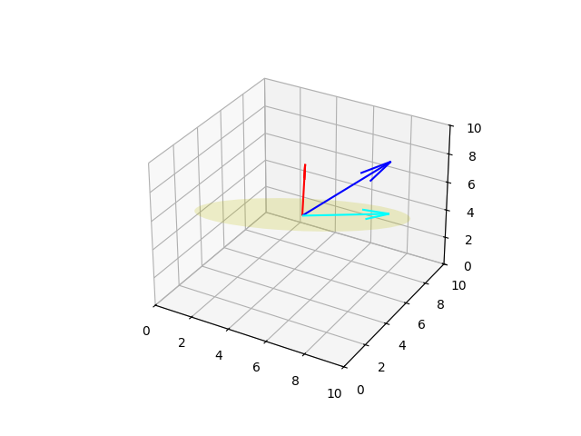
Bir Düzlem Üzerindeki İki Vektör Arasındaki Açıyı Bulmak
Şu resme bakalım,
n = np.array([-1/3.,2/3.,2/3.])
o = np.array([5,5,5])
u1 = np.array([3,3,3])
u2 = np.array([-3,0,3])
fig = plt.figure()
ax = Axes3D(fig)
plot3d.plot_plane(ax, o, n, size=5)
p1 = u1 - (np.dot(u1,n) / np.dot(n,n)) * n
p2 = u2 - (np.dot(u2,n) / np.dot(n,n)) * n
plot3d.plot_vector(fig, o, 3*n,'red')
plot3d.plot_vector(fig, o, u1)
plot3d.plot_vector(fig, o, u2)
plot3d.plot_vector(fig, o, p1,'cyan')
plot3d.plot_vector(fig, o, p2,'skyblue')
plot3d.plot_vector(fig, o, 0.5*np.cross(p1,p2),'yellow')
ax.view_init(elev=30, azim=30)
plt.savefig('15_10.png')
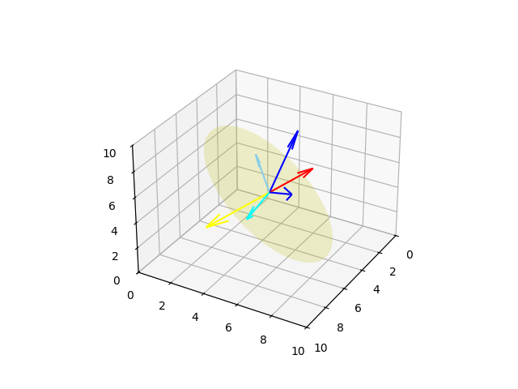
Koyu mavi iki vektörün düzlem üzerinde yansıtılmasını görüyoruz (açık ve biraz daha açık mavi iki vektör). Bu vektörler arasındaki açı nedir? Tabii açı derken hangi yöne doğru açı bulunmak isteniyor, bu soru da önemli. Çoğu zaman bir referans vektörüne olan ikinci bir vektörün saat yönü ya da onun tersi yöndeki açısını isteriz. Eger açıyı bilinen
$$ \theta = \arccos \frac{u \cdot v}{||u||||v|||}$$
ile hesaplarsak, bu hesap bize her zaman iki vektör arası en "yakın" açıyı verir (yani 180'den daha az olan açıyı). Fakat biz mesela saat yönü tersindeki açıyı istiyorsak, o zaman potansiyel olarak 180'den fazla açılar da elde edebilmemiz gerekir.
Çözüm için çapraz çarpım kullanabiliriz, $n \cdot (u \times v)$ hesabına bakarız, bu hesap artı ise üstteki $\theta$'yi olduğu gibi alırız, değil ise $360-\theta$'yi kullanırız. Bunun sebebi $u \times v$ bize sağ el kuralına göre, bkz [2], $u,v$ referanslı bir üçüncü vektör veriyor. Sağ el kuralınında eğer $u$'dan başlayıp $v$'ye saat yönü tersine giderken 180 dereceden az bir gidiş yeterli ise, üçüncü vektör yukarı doğru işaret ediyor, yoksa aşağı doğru. Mesela üstteki örnekte vektör düzlem normaline ters, yani aşağı. Bu bize ilgilendiğimiz gidiş yönündeki açının 180'den fazla olduğuna dair bir işaret, o zaman $360 - \theta$ kullanmamız gerekir. Noktasal çarpım aynı yön / terslik hesabı için; üçüncü vektörün düzlem normali ile noktasal çarpımı eğer aynı yönde ise artı, değil ise eksi olacağı için 360'dan çıkartma irdelemesini bu şekilde yapabiliriz.
import numpy.linalg as lin
deg = np.rad2deg(np.arccos(np.dot(p1,p2) / (lin.norm(p1)*lin.norm(p2))))
s = np.dot(n, np.cross(p1,p2))
print 'deg', deg
if s < 0: print '360 - deg =', 360-deg
else: print 'deg', deg
deg 135.0
360 - deg = 225.0
Kaynaklar
[1] Maplesoft, Projection of a Vector onto a Plane, http://www.maplesoft.com/support/help/Maple/view.aspx?path=MathApps/ProjectionOfVectorOntoPlane
[2] Bayramlı, Yapay Görüş ve Robotik, Ders 2